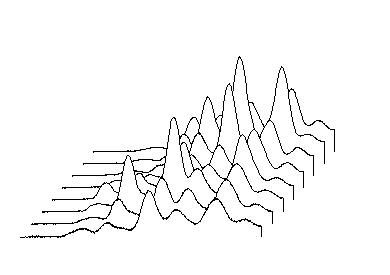
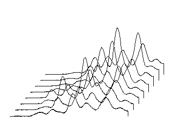
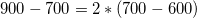
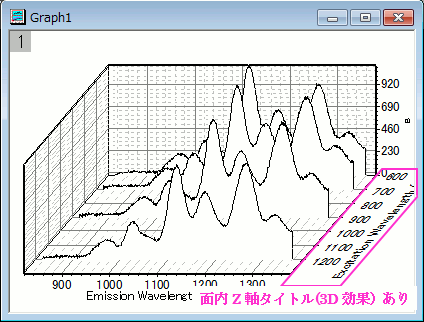
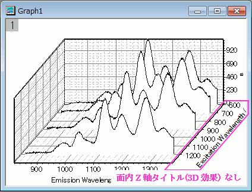

このタブは2Dウォータフォールグラフを作成した時のみ利用可能です。
内容 |
このチェックボックスを選択すると、前景のプロットにより隠れている線を表示します。
|  |  |
| 非表示の線を現さない | 非表示の線を現す |
|---|
線のオフセットはワークシートラベル行で制御します。ワークシートラベル行で使用できるのは、ロングネーム、コメント、単位、サンプリング間隔、パラメータで、使用できるのは数値のみです。このドロップダウンリストからラベル行を選択してワークシートのZ値ソースとなる行を選択します。複数の数値列ラベル行を有している場合、デフォルトで最大のインデックスのある数値のラベル行がZ軸のためのZ値ソースとして使用されます。数値ラベル行が無かった場合、自動オプションが選択されます。Z値ソースとして設定したとしても、テキストを有する行はここでは使用できません。
以下の例では、ワークシートのユーザ定義パラメータExcitation Wavelength (nm)が、ウォーターフォールグラフのZ値ソースとして選択されています。"700" と"900" 曲線間のオフセットは、"600" と"700" 曲線間のオフセットの2倍になっています。なぜなら、

同じように"900" と"1200" 曲線間のオフセットは、"600" と"700" 曲線間のオフセットの3倍になっています。
3Dウォータフォールグラフの同じ項目は作図の詳細ダイアログの「その他の3Dオプション」タブ内にあります。
XオフセットとYオフセットは隣り合うプロット同士のXとYのオフセットを変更するのに使用します。これは、表示する角度を調整するものです(2Dウォータフォールではグラフの表示角度はグラフレイヤを選択して表示するハンドルを使用する事で変更できます。3Dウォータフォールではゆがみボタンを使用します)。
2Dウォータフォールプロットの表示角度を制御する方法についての詳細は、「ウォータフォールプロットの編集」をご覧ください。
このチェックボックスはZ軸のタイトルを軸の面内に「横たわらせる」かどうか指定します。違いは次の画像を確認してください。
|  |  |
| 面内Z軸タイトルのチェックを付ける | 面内Z軸タイトルのチェックを外す |
|---|
3Dウォータグラフでは軸タブを開けば目盛ラベル/軸タイトル/目盛を回転できます。